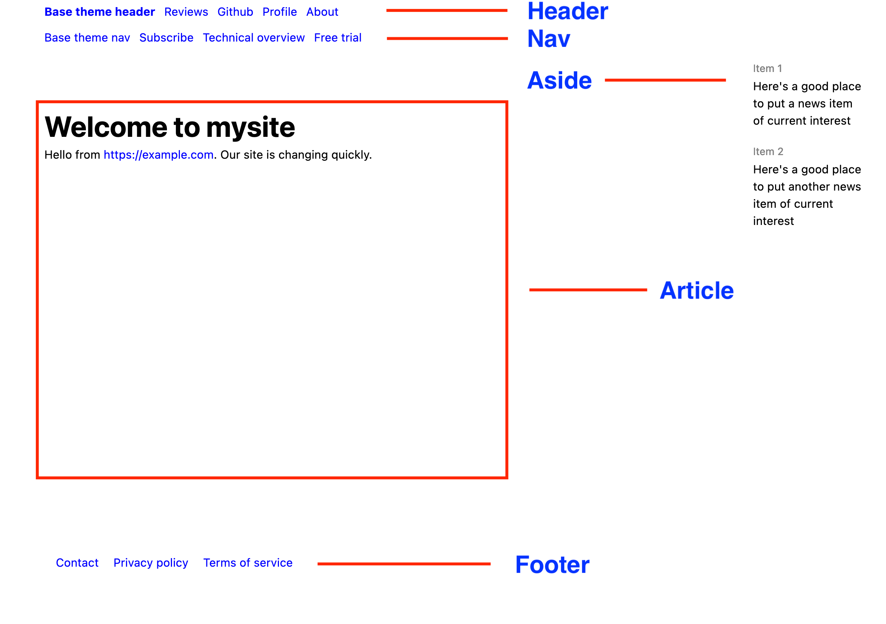

Glossary
article
The article is the main body text of a web page. In the
example below, the article consists of the worlds hello, world.:
---
theme: "informer"
---
hello, world.
When rendered as an HTML page using the PocoDocs theme, you'll also see a header, nav, aside, and footer. Those are not part of the article. They're known as page layout elements.
anchor text
In HTML, a link to a site has at a minimum these essential elements:
<a href="https://example.com">Examplicious!</a>
As you can probably guess, the destination URL for this link is
the legendary site https://example.com. The part that humans
read on a web page can be anything, and the term for it is
anchor text.
In Markdown you'll see links formatted this way:
[Examplicious!](https://example.com)
Such a link gets converted to the precise form shown above it. Anchor text is a little more important that you think, because it's considered in SEO and accessibility factors. If you have a site about nutrition and you're writing about riboflavin, this link:
Uh-uh
Read [here](https://example.com/riboflavin)
Is much less helpful than this one:
That's what I'm talking about
Learn more about [riboflavin's role in metabolism](https://example.com/riboflavin)
burger menu
The navigation menu that appears only on small format screens, such as phones. It is a simple list of links that replaces the header, which often has too many links or bulky brand identification to fit comfortably on the small screen.
code block
Synonomous with code fence
code fence
A code fence surrounds arbitrary text with lines consisting of 3 tickmarks: ``` so that the text displays in a monospace font. It's good for distinguishing blocks of code in an article. Here's an example.
// Return the current time as a string
func theTime() string {
t := time.Now()
s := fmt.Sprintf("%s", t.Format("02 Jan 2006 15:04:05"))
return s
}
CommmonMark
The term CommonMark is the name of a community standard for for the Markdown text formatting conventions used to generate your web pages. In these help pages it is synonomous with Markdown and markup.
front matter
Front matter is everything in between the line starting
with --- to its matching --- line at the end. All front
matter entries consist of a single key followed by a :
colon character, a space, and a value consisting
of one or more items. PocoCMS uses the key to look up
the value.
In the example
below, there are two entries in the front matter: Title
with the value Introducing PocoCMS, and
has a key nameed Stylesheets, with the value consisting
of multiple stylesheet names that will be added as
separate <style> tags in the finished HTML document.
---
title: "Introducing PocoCMS"
theme: "base"
stylesheets:
- ../../css/skinny.css
---
See Front matter for more details.
global theme
A global theme creates default styling for every page in your site.
The global theme can only be set on the home page. Use page theme to add a theme to a single page.
To set the global theme, go to your home page and add this front matter (replace "poquito" with whatever theme name you wish):
---
theme: "poquito"
---
h1, h2, h3, h4, h5, h6
HTML headings, corresponding directly to heading levels in Markdown. See heading.
heading
The term heading has a specific meaning in HTML. Most body text is in paragraphs. Take a typical sentence like this one:
PocoCMS lets you start a website in just a few seconds.
That body text gets translated into <p> or paragraph tags
in HTML, like this:
<p>PocoCMS lets you start a website in just a few seconds.</p>
Sometimes you need to emphasize something, so you emphasize it this way:
# Getting Started
PocoCMS lets you start a website in just a few seconds.
The Getting started portion will usually be emphasized visually in some way,
typically through font height and weight. When you have a line starting
with # it means use the most important weight, or a header 1.
It gets translated into HTML like this:
<h1>Getting Started</h1>
There are 6 levels of headings: h1 through h6. Start
a line with a # for each one. This Markdown:
### Create a site
converts to the HTML:
<h3>Getting Started</h3>
While all 6 levels of indentation can provide useful visual cues to the reader, search engines usually respect only 3 levels.
home page
The home page is a file named either index.md or README.md
in the root directory of your project. It has some special
properties, for example, it's the only file you can use to
theme to set a global theme for the site overall.
README.md vs index.md
If you have two home page files in the root directory,
one named README.md and another named index.md,
the one named README.md takes priority.
It is renamed index.html in the webroot
directory when your site is generated.
Why index.html is important
When someone visits your website, the web server looks specifically
for the distinguished file named index.html in its own webroot directory, so
index.html has special importance.
The reason README.md takes priority over index.md is that's how many
previous site generators roll, such as the one on GitHub.
Defining a global theme on the home page
The home page lets you define a global theme for the entire site.
If you add theme: followed by the theme name to the front
matter as shown below, all pages of your site will default to
the global theme without your having to specify it on each page.
For example, this defines wide as the global theme:
---
theme: "pocodocs"
---
Layout element
A finished PocoCMS web page includes the following layout elements: header, nav, article, aside, and footer. Each layout element directly corresponds to an HTML tag. Most of them can be disabled on a per-page basis, overriding the theme definition.
Layout elements illustrated

header
The <header> element, normally referred to simply as the header,
appears at the top of the page. It is likely to look similar on
most pages of your site. It usually makes your site easily
identifiable, normally has a clickable logo that brings
users back to the home page, and may have some common navigation
elements.
nav
The <nav> element, normally called the nav or navbar,
is sandwiched between the header and the article. It should
look similar on most pages of your site. It usually has
some common navigation elements.
article
The <article> element contains the text of your
Markdown page after conversion to HTML. It appears under the navbar. It is normally unique on each page of your site. Search engines
don't like to see articles or title tags
repeated.
aside
The <aside> element acts as a sidebar. It normally appears to the
left or right of the article. HTML recognizes only one aside
per page.
footer
- The
<footer>appears at the bottom of the page right after the article. It should look similar on most pages of your site. It usually has identifying information for the company and some common navigation elements such as links to contact, terms and conditions, privacy policy, and sitemap.
Layout elements appear on the page only if the theme has defined theme. Most of them can be omitted one page at a time by using "SUPPRESS" as their value in the front matter
For example, to prevent a sidebar from appearing on the current page, you'd add this to the front matter.
---
Aside: "SUPPRESS"
---
For more on layout elements, read about the structure of a
complete HTML document on MDN.
Markdown
Markdown is a sensible way to represent text files so that they read easily as plain text if printed out as is, but which also carry enough semantic meaning that they can be converted into HTML. Markdown is technically known as a markup langauge, which means that it contains both text, e.g. hello, world, and easily distinguishable annotations about how the text is used, e.g. marking up hello to emphasize the word in italics--its markup. The name markdown is a play on the term markup. The name markdown is a play on the term markup.
The closest thing to an industry standard for Markdown is CommonMark. PocoCMS converts all CommonMark text according to specification, and includes extensions for things like tables, strikethrough, and autolinks. See the source to Goldmark for more information on extensions.
Take this example of Markdown you might use in a document:
# Introduction
*hello*, world
The above would be converted in HTML that looks like this.
<h1>Introduction</h1>
<p<em>hello</em>, world.</p>
That means the # Introduction line actually represents the HTML heading type h1, which is the hightest level of organization. ## Introduction would generate an h2 header, and so on.
The asterisk characters are replaced by the <em> tag pair, which means they have the semantic power of emphasis. This is represented by HTML as italics, although you could override it in CSS.
In these help pages Markdown is synonyomous with markup and CommonMark.
Markup
The term markup generally refers to the Markdown text formatting conventions used to generate your web pages. In these help pages it is synonomous with Markdown, markup, and CommonMark.
Technically speaking HTML is also a markup language but in the context of static site generators such as PocoCMS the term normally refers to Markdown.
page theme
A page theme controls the appearance of a single page. It overrides the global theme, if any.
To set a theme for a single page, use pagetheme in the
front matter like this, where you'd replace pocodocs with any
theme you have available:
pagetheme: "pocodocs"
.poco directory
Each site you create with PocoCMS has a directory named .poco
in your site's root directory.
It's automatically created when you use poco -new to create
a site.
.
├── index.md
│
├── WWW
│ └── index.html
│
└─── .poco
The contents of the .poco directory are ilustrated in
.poco directory structure
The .poco directory contains things like
- All PocoCMS themes you have available
- All CSS files required by your project
- Javscript files required by your home page
- A few small assets used to demonstrate PocoCMS features
Wherever the Poco application is stored, it has a master copy
of the .poco directory used to generate the .poco directory
in each project. That means if you change the themes in that
directory, you may wish to copy those changes to the .poco
directories in projects you created prior to those changes.
project
A PocoCMS project is a directory tree with the source Markdown files and other assets required to create a website. The name of that directory is used as the name of your project. It is also called the root directory.
Parts of a project
At a minimum, a project consists of:
- its containing or root directory,
- a home page, which is a Markdown file named
either
index.mdorREADME.md, and - a webroot subdirectory, by default named
WWW.
You can't do much without a .poco directory, which contains assets such as themes and stylesheets.
Sometimes we use the words site when we're talking about your
project, even though technically your site is what's generated by
PocoCMS and copied into your webroot
root directory
The root directory is the starting point of your PocoCMS project, and because it also holds the [.poco directory)(#poco-directory) it's important to know what root directory means. When you do something like
poco -new mysite
cd mysite
Then the root directory is mysite. If at some point you create a new directory
and change to it you are no longer in the root directory:
poco -new mysite
cd mysite
mkdir reference
cd reference
At this point you're in mysite/reference and you are no longer in
the root directory. The reason to understand this distinction is that
you will sometimes need to do something like edit a theme,
and you do so via the poco directory. You'd
do that by making sure you're in the root directory, then load
up a the file by giving an address of something like
.poco/themes/base/README.md for the Base theme or
.poco/themes/electro/README.md for the Electro theme.
semantic meaning
The term semantic meaning
means in HTML that the structure of a document gives
different weight to the information being presented.
For example, if you make the title of your page
distinct simply by choosing large letters in boldface,
you're missing out. If instead you enclose it
in <h1> tags, search engines and screen readers
will probably assume it's something people are more
likely to scan and remember.
Conversely, if you fill your page with dozens of
<h1> tags they will lose their semantic power.
Your page is not just made of the article. It also has other layout elements: the header, nav bar, aside, and footer. These too are given semantic meaning. By definition the aside will be considered less important than the article. The header is probably more important than the footer, and so on.
SEO
SEO, or search engine optimization, is the art of structuring and writing your site so that it's more likely to be found in web searches. PocoCMS SEO
site
See project
source file
A source file is the Markdown file used to create a matching HTML file for output.
For example, most directories have a source filenamed index.html, which
is the default location web servers look when users navigate to a
website
style tag
You can override a page's stylesheet with style tags. These are the
enclosed in <style>/</style> tags on the page. They are loaded
after stylesheets, so you're guaranteed that they have the final say
on that page.
See front matter for a complete example.
SUPPRESS
You'll often see front matter that looks like this to hide parts of a page such as the header,nav,aside, or footer:
---
aside: SUPPRESS
---
This notation is specifically in uppercase. Why?
Because another feature of PocoCMS is that you can replace these page elements with the contents of a file, like this:
---
aside: newaside.md
---
Keeping the word SUPPRESS in uppercase helps reduce the possibility that
the user somehow had a file by the name of suppress.
This is probably a dumb constraint and will probably be removed in a future version.
theme
A PocoCMS theme is a collection of stylesheets and Markdown files contained in a directory (folder). The directory is used as the name of the theme. The theme can specify styles to include on every page of the site. The theme can also specify layout elements: a header, nav bar, footer, or aside to include on each page.
There two kinds of themes: global, and page. A global theme causes all pages in the site to use the same theme without having to specify it every time in the page front matter. See home page for a usage example.
You can specify themes on a per page basis. For example, if you want
to use the theme named wide you would add this to your Markdown page:
---
theme: .poco/themes/wide
---
How to find out what themes are installed
To find out what themes are installed on your machine, just run this at the command line:
poco -themes
theme README
A PocoCMS theme is a collection of stylesheets,
Markdown files, and other assets
listed in the file README.md file for that theme's directory.
Suppose you choose the Electro theme for your document:
---
pagetheme: electro
---
# Electro theme test
hello, world.
The Electro theme's file in .poco/themes/electro/README.md
looks something like this:
---
header: header.md
nav: nav.md
aside: aside.md
footer: footer.md
importrules:
- url('https://fonts.googleapis.com/css?family=Nova+Mono&display=swap');
- url('https://fonts.googleapis.com/css?family=Roboto+Condensed:400,700&display=swap');
stylesheets:
- ../../css/root.css
- ../../css/reset.css
- ../../css/sizes.css
- ../../css/layout.css
- ../../css/type.css
- ../../css/skinny.css
- ../../css/mediacolors.css
- electro.css
---
.. etc
It derives the fundamental visual appearance from the stylesheets.
Page layout elements get their definitions from files named header.md and so forth.
title
Each HTML document should have a title tag. Often the title tag determines what text appears to people searching on the web, and it's normally used for browser tabs as well.
user application data directory
Every operating system has a preferred location for storing data from third-party apps such as PocoCMS.
PocoCMS comes with a package of themes, stylesheets, graphic assets, and
JavaScript files, and a few other goodies. When you create a project
with poco -new, these are all copied into the .poco subdirectory.
The original source of those themes is under pococms in
your user application data directory. Here's how to view your
user application data directory in some of PocoCMS's supported
operating systems. Open up a terminal and type:
Viewing your user application data directory on Windows
echo %AppData%
echo %AppData%\pococms
Viewing your user application data directory on Mac
echo $HOME/Library/Caches
echo $HOME/Library/Caches/pococms
Viewing your user application data directory on Linux
echo $XDG_CACHE_HOME
echo $XDG_CACHE_HOME/pococms
web root
Synonymous with webroot.
webroot
The webroot is a directory contains all files generated by Poco CMS required
for your website. By default it's a subdirectory under the directory
used for your project named WWW. You can
designate a different directory using the webroot
command line option
To make your website visible to the world, all you have to do is copy those files into a publicly available directory at a web host.
YAML
YAML is a language used to describe data in a way that people can figure out very easily, just the way Markdown is a way to describe how a document should be displayed.
key/value pairs
YAML can get pretty descriptive but it's mostly used to represent either single values, or simple lists of values. Each of thes entities is described by a title called a key, and it's assigned a value in the YAML.
In YAML, key/value pairs are separated by a colon, as shown next.
Keys that hold a single value
For example, here the header key is assigned the
value news-header.md:
---
header: news-header.md
---
In this particular context the value is treated as a filename,
but that doesn't matter here. The key is header and its
value is news-header.md.
Note that the key and the value are on the same line.
Keys that hold a list of values
A key can hold a list of values. In that case, the key
and : colon are on line by themselves,
and the list values are separated by new
lines, thd - character followed by a space,
and then the value:
---
stylesheets:
- ../../css/root.css
- ../../css/reset.css
- ../../css/sizes.css
- ../../css/layout.css
- ../../css/type.css
- ../../css/colors.css
- ../../css/media.css
Value lists are ordered
When style sheets are declared in a document, their order is important. CSS works that way on purpose. You can define rules on document A, and if document B follows it, anything B defines that's found in A is overriden.
YAML values lists preserve their ordering, so in the
example above it is guaranteed that ../../css/root.css
will get loaded first, then../../css/reset.css and so on.
The rules used here are restrictive but YAML is much more expressive than that. PocoCMS uses very simple formatting to make it easier to stay consistent and to scan lists at a glance. Learn more about YAML at YAML.org